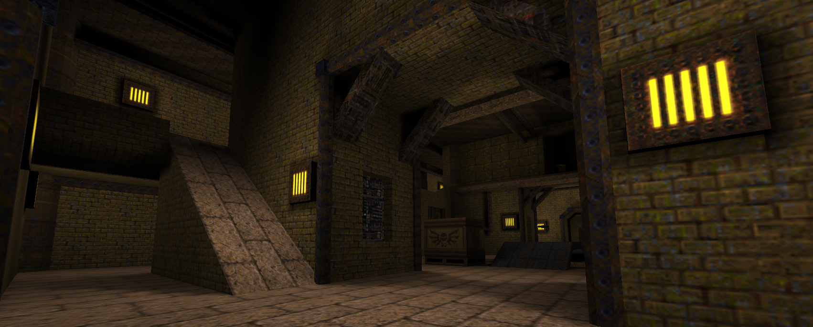
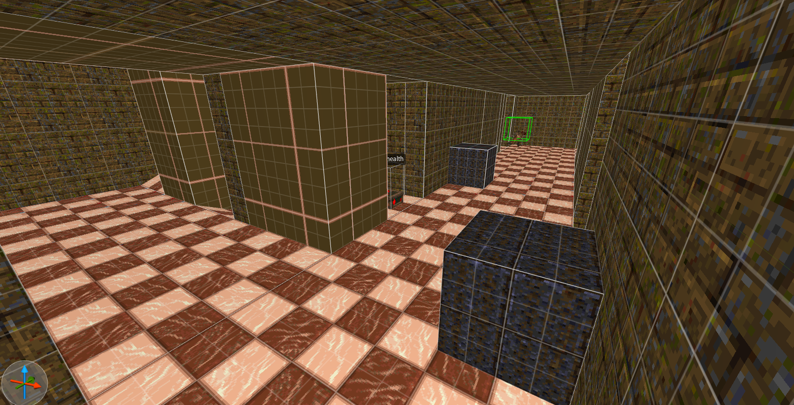
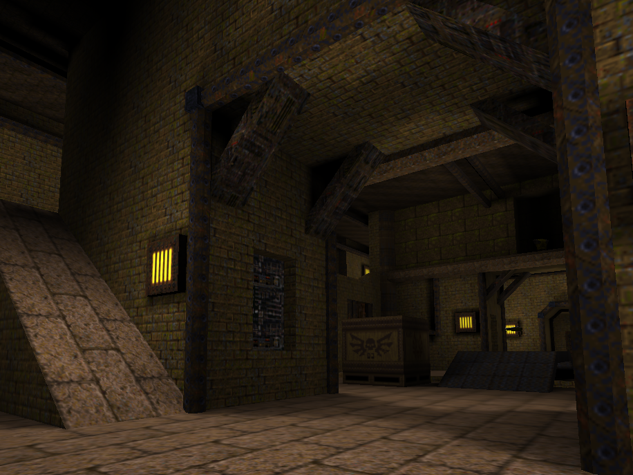
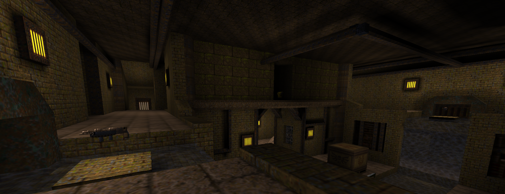
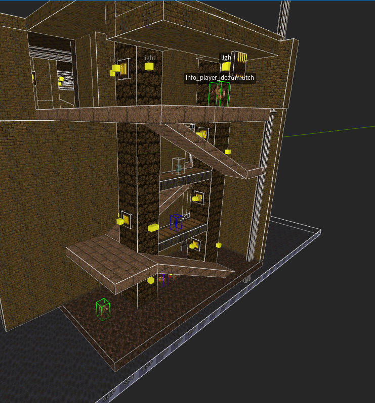
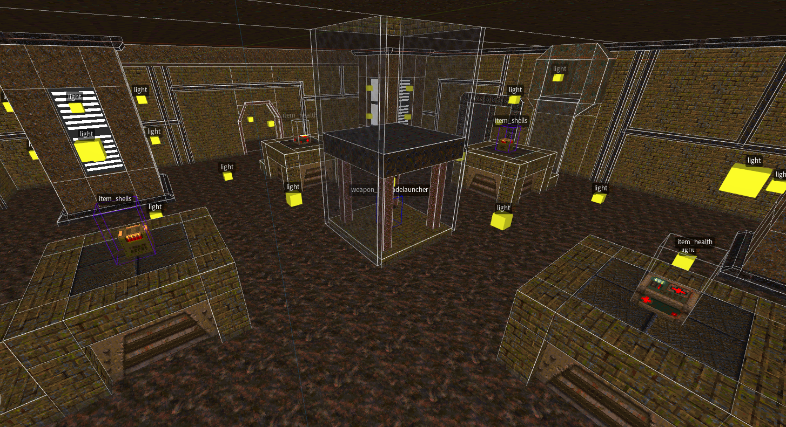
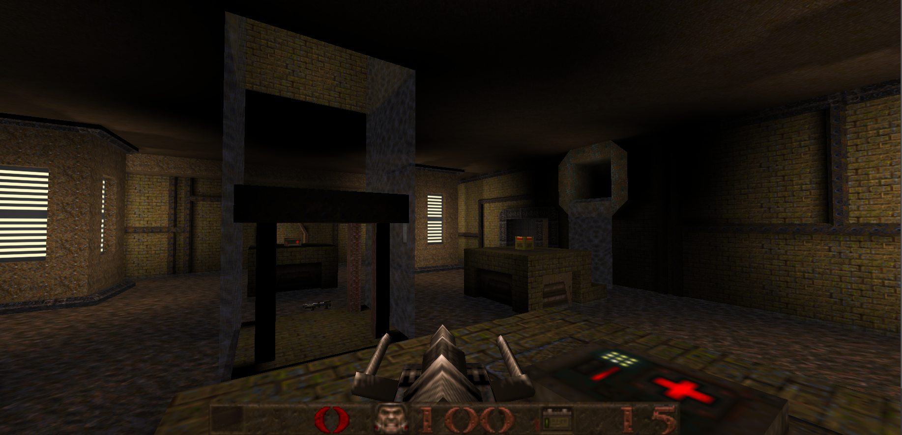
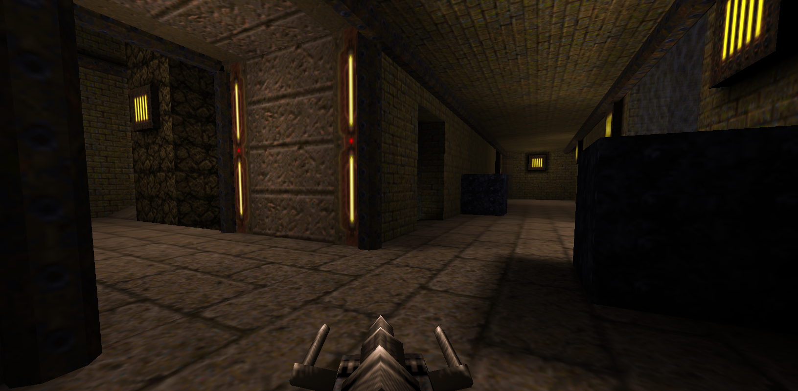

Sewage Underpass
Sewage Underpass is a team based, 2-6 player competitive deathmatch map made for Quake 1 Multiplayer. Like the name suggests, this map takes place in an underground sewage filtration facility. The entire area is filled with grime and mold, with various pieces of machinery and pipe work threaded all throughout the facility. Directly through the center of the map are two sewage channels flowing down towards the center of the map. This map focuses on quickly moving through the environment and quickly moving from hall to hall.
Made by Harrison Kratz,
Engine used: TrenchBroom
Initial Map Planning
After I got the initial shape of the arena, I moved on to thinking about routes from the two team spawns. The easiest one was creating the path of least resistance to the battle arena. Ultimately this just took the form of a straight hallway from the spawn to the arena, it’s the quickest way to get there, but you are directly in the line of sight of anyone who might be waiting in the arena. To make sure this didn’t turn into spawn camping, there is a staircase that descends to the spawn area.
Next were the two upper paths, and this is where some of the more asymmetrical elements of this level come into play. Each spawn has an exit forward to the main path, but there is also an exit on the spawns right that leads up to the upper path right of the spawn. However, while this is a quick way to get to the upper platforms, there is a disadvantage to this.
Read More Here

Grey Box
The open nature made the area more imposing to enter, but also allowed for a lot of combat opportunities between the levels of action. While currently I feel like the size is at a good place, navigation and cover in this area will be a large focus when playtesting.
However, there were some areas that I felt could be expanded upon, and I wanted to add more areas for the players to explore. Some of my peers who reviewed the initial concept suggested having a hole under the bridge in the center arena where the water would be flowing towards. This creates a path to a new area in the map, adds more verticality, and makes sense within the narrative and aesthetics of the map as a whole.
This new underground area is a lot more open, as I wanted this to be a very risky area to be in. Little cover and no way back up through the hole in the ceiling, which is where most people will be coming up from. However, this created the issue of getting back up? The first area I added to solve this was the ramped area shown below.
This area connects the underground room, to the upper path, exiting right next to the ramp leading to the spawn. While it takes a bit of time to get up, the gap in the center gives a quick way down at the risk of health. There are also two spawn points at the bottom and top to incentivize players to use it over the hole in the arena. However I didn’t like how much of a choke point this created, and how slow it felt. As a result I added teleporters that connected the underground back up to the main floor. While quicker they lead to very exposed areas on the main floor, right next to where the main path meets the side halls. I’m interested to see how players decide to navigate between the two areas now, and want that to be the main focus when playtesting next.
Iteration
Further Documentation:

Texturing
Going into designing the more aesthetics of the map and texturing, I wanted to take a lot of inspiration from concrete molding techniques and creating an environment that feels like it has a function within the world it in habits. I was able to get a good pallet of textures from just the base quake Wads and start to really experiment with what the environment will look like and overall tone.Read More
Lighting
Lighting an environment within trench broom is a bit of a challenge due to the fact you have to compile the map every time you want to check it, so as a result I tried to be sparing with light within this map. Luckily the map suits the dim aesthetic as the whole map is supposed to take place underground.Read More
Final Result
The map has reached completion and is available on the Release section of the Github Wiki page! I’ve included a variety of screenshots of the level from both the in-engine editor and the compiled map, as well as a short 4 minute walkthrough video of the map.





